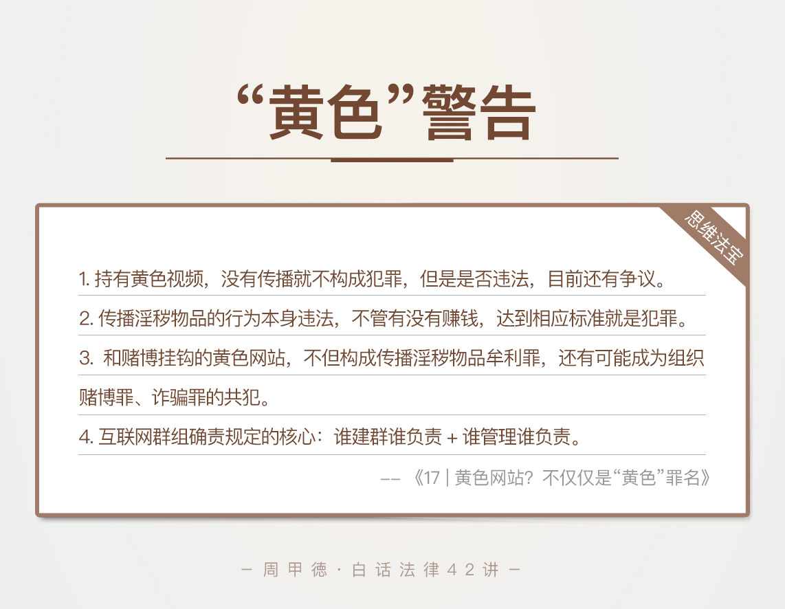

- 00 开篇词 这年头，你真应该懂点法律常识.md
- 01 “老周，我想知道” 常见法律认知盲区（一）.md
- 02 “老周，我想知道” 律师就在你身边（二）.md
- 03 “老周，我想知道” 律师就在你身边（三）.md
- 04 “老周，我想知道” 律师就在你身边（四）.md
- 05 创业未捷老板跑，社保工资哪里讨？.md
- 06 保密还是“卖身”，霸王条款怎么看？.md
- 07 编造流言蹭热度？看守所里降温度！.md
- 08 合同在手欠款难收，报警有用吗？.md
- 09 致创业：谁动了我的股权？.md
- 10 又见猝死！工“殇”究竟是不是工伤？.md
- 11 期权的“前世今生”.md
- 12 裁员面前，你能做的还有什么？.md
- 13 抄袭、盗图为什么做不得？.md
- 14 加班、工资、休假，你知道多少？.md
- 15 受贿原来这么“容易”.md
- 16 今天你用“VPN”了吗？.md
- 17 漏洞在眼前，可以悄悄破解吗？.md
- 18 “爬虫”真的合法吗？.md
- 19 非法集资到底是个啥？.md
- 20 黄色网站？不仅仅是“黄色”罪名.md
- 21 谁修改了我的积分资产？.md
- 22 外挂真能大吉大利吗？.md
- 23 如何看待“从删库到跑路”？.md
- 24 “伪基站”是你的避风港吗？.md
- 25 “网络诈骗”真的离你很远吗？.md
- 26 智斗中介：“北上广”租房图鉴.md
- 27 买买买！买房的“避坑”指南.md
- 28 闪婚又闪离，彩礼怎么理？.md
- 29 离婚还想和平？你要这么做.md
- 30 遗产继承的爱恨情仇.md
- 31 骗术升级？假结婚、假离婚的那些事儿.md
- 32 孩子学校受伤，谁之过？.md
- 33 如何让欠债还钱真正“天经地义”？.md
- 34 从透支到盗刷：人人须知的银行卡纠纷.md
- 35 远离“套路贷”的套路大全.md
- 36 危险！酒驾为什么被罚那么重？.md
- 37 老人倒地，“扶”“不服”？.md
- 38 “能动手就别吵吵”，代价你真的知道吗？.md
- 39 发生交通事故，如何处理？.md
- 40 交通事故综合法宝.md
- 41 婚姻家庭综合法宝.md
- 42 买卖房屋综合法宝.md
- 一键直达 法律专栏“食用”指南.md
- 加餐 “新冠肺炎”影响下，17个常见法律问题解答.md
- 结束语 法律，不会终止的篇章.md
20 黄色网站？不仅仅是“黄色”罪名
在互联网刚兴起那几年，有一句流传很广的话：在互联网上，没人知道你是一条狗。虽说这调侃的是社交的匿名和隐私问题，但我也看到了其发展的另一面，也就是网络上有藏污纳垢的现象，最常见的就是一些黄色网站、论坛或是其他群组。
不过，网络从来不是法外之地。一旦涉及色情内容，相关人员可能会犯这些罪：传播淫秽物品罪、传播淫秽物品牟利罪、赌博罪、诈骗罪等等。是不是听起来很吓人？就比如说，我们今天的主人公小赵。
小赵是个微信重度使用者，本人特别活泼，善于交际。为了方便跟同事的交流，他建了一个同事微信群。这本来是很正常的事，我们也经常这么做，但是，有一天，一个同事在群里发了一个小电影后，整个群就开始变味儿了。
当时，小赵正好加了几个所谓的“共享群”，手里有一些“资源”。于是，他开始在自己的群里转发这种内容。群很快活跃了起来，不少人也开始拉朋友进群，共享资源。小赵的内心越发膨胀，发的视频也越来越多。
最后被警方查获时，小赵的群里已经有500人，黄色视频也发了500多部。小赵心里是委屈的。因为他觉得自己只是单纯做分享，又没赚钱或做其他交易，怎么就被查了呢？
这种行为违法了吗？再进一步，如果小赵觉得这是个商机，开始“收费入群”，你又怎么看呢？
想要弄明白这事儿，我们先要了解这么几个法律知识。
法律知识
淫秽物品
淫秽物品，也就是我们通常所说的色情物品，是指具体描绘性行为，或者露骨宣扬色情的物品，通常有淫秽书刊、影片、录像带、录音带、图片等形式。
不过要注意区分的是，下面两种情况，并不算淫秽物品。
有关人体生理、医学方面的科学作品，不能算淫秽物品。我们常说医生眼中无男女，也正是因为生理知识不等于色情知识。
一些文学、艺术作品，虽然有一些色情内容，但本身有艺术价值，也不能算淫秽物品。
传播淫秽物品罪 、传播淫秽物品牟利罪
明白了淫秽物品到底指什么，我们再来看看相关的罪名。日常生活中，最常见的罪名有两个，一个是传播淫秽物品罪，另一个就是传播淫秽物品牟利罪。
传播淫秽物品罪，重点在于“传播”二字。传播上面提到书图影音在内的淫秽物品，情节严重的就会被定罪。情节严重主要包括这么几种情况：
次数多：多次地、经常地传播淫秽物品。
数量大：传播的淫秽物品数量比较大，比如说视频40个以上，就达到定罪条件了。
受众广：虽然传播淫秽物品的次数不多、数量不大，但观看、浏览人数很多，造成严重后果多，也符合定罪条件。
涉及未成年：在未成年人中传播，造成严重后果的等等。
传播淫秽物品牟利罪，从名字上就可以看出，“传播”和“牟利”都是重点。这个罪名是指为了牟利，而传播淫秽物品的行为。说白了，跟上面罪名最大的区别就是，有没有赚钱。涉及盈利的行为，自然要比单纯的传播行为严重不少。
根据相关的司法解释，我可以列举几个比较常见的情况，给你做个区分：
视频内容：单纯传播40个以上达到定罪条件，盈利传播20个以上达到定罪条件。
音频内容：单纯传播200个以上达到定罪条件，盈利传播100个以上达到定罪条件。
图片、短信、文章：单纯传播400个以上达到定罪条件，盈利传播200个以上达到定罪条件。
实际点击数：单纯传播的点击数20000次以上达到定罪条件，盈利传播的点击数10000次以上达到定罪条件。
也就是说，在定罪门槛上，涉及盈利的传播淫秽物品牟利罪，比传播淫秽物品罪更低。
那么相对应的，在惩罚上，传播淫秽物品牟利罪的量刑，也要比传播淫秽物品罪重得多。一般情况下，传播淫秽物品罪判刑最高是二年，而传播淫秽物品牟利罪，最高可能会判无期徒刑。
当然，如果你想了解更具体的定罪标准，可以查看《最高人民法院、最高人民检察院关于办理利用互联网、移动通讯终端、声讯台制作、复制、出版、贩卖、传播淫秽电子信息刑事案件具体应用法律若干问题的解释》。
有不理解的地方，也可以留言问我。
互联网群组确责问题
最后，我来说说，互联网的群组确责问题。2017年10月8日，国家出台了《互联网群组信息服务管理规定》。这个规定一出来，我立刻就把自已建的好几个QQ群给解散了。
为啥呢？我们来看看这个规定，你就明白了。规定的名字很长，你不用背下来，记住这两句话就是了：
谁建群谁负责
谁管理谁负责
这两点，基本就是这个规定的核心内容了。也就是说，在群里有犯法活动，不但发布者要负责，群主、管理员也都要承担一定的法律责任。
我们平时所说的微信群、QQ群、贴吧、支付宝群等，都属于这个规定里的互联网群组。比方说，有人在贴吧发黄色图片、违法信息，不仅贴吧要被解散，群主也就是这个贴吧的吧主，同样可能会受罚。
这也就是我解散群的主要原因了，没时间管，也不愿承担那么大的责任。这几年，群组可以算是传播淫秽物品的一个主要场所了，群主一定要清楚自己的责任，看客也得注意自已的行为分寸。
情景分析
明白了这些，我们再来看小赵的问题，你应该就可以“审判”了。
小赵在微信群里传播淫秽视频，但是并没有收取任何费用，所以应该按照传播淫秽物品的定罪条件来判断。他传播视频的数量是541部，远远高于我们上面提到的40这个数字，显然已经构成犯罪，会被追究法律责任了。而传播淫秽物品罪，一般会有二年以下的刑罚。
如果小赵建群同时还收费呢？那他就会构成，更严重的传播淫秽物品牟利罪，会被判处三年以下有期徒刑、拘役或者管制，当然也会有罚款。情节严重的，会被判三年到十年；情节特别严重的，十年以上甚至是无期徒刑、没收财产都在等着他了。
其实除了小赵这样的群传播犯罪，还有一种很常见的情况，就是黄色网站问题。千万不要小看黄色网站，一个小小的黄色网站，往往就有好几种犯罪。
比方说，在你浏览这些网站时，你的手机或者电脑可能会被瞬间植入木马病毒，防火墙和杀毒软件也无能为力。这样，你的浏览痕迹、个人信息和密码，甚至银行卡账户等都可能被盗取。
再比如和赌博挂钩的黄色网站。在黄色网站最显眼的地方，一般会有“澳门赌场”“六合彩”之类的赌博广告和链接。这种行为的违法性更重，不但构成传播淫秽物品牟利罪，还有可能成为组织赌博罪的共犯。而赌博链接，还可能涉嫌诈骗罪，所有参与者都可能成为共犯。
所以，任何一个黄色网站，背后都可能藏着个庞大的犯罪团伙，而一些无知的网站建设者和经营者，很可能会被犯罪分子利用。如果只是为了点广告费，而去搭建黄色网站，往往会是拿着卖白菜的钱，犯着卖白粉的罪，成为真凶的替罪羔羊。
最后，我再回答一个很多人都问过的问题，在自已的电脑、手机里保存“黄色电影”，自己看，算不算犯罪呢？
事实上，在“2002年夫妻看黄碟事件”后，这类问题有了比较明确的共识。没有传播就不构成犯罪，但是有没有违法，目前还有争议。
比如说《计算机信息网络国际联网安全保护管理办法》的第五条规定，任何人不能利用国际联网制作、复制、查阅和传播淫秽信息。但在我看来，自已电脑或手机里保存的“黄色电影”，只要不影响别人，也别去传播，就不属于违法行为。
不过，我们最好还是注意一些，尽量不要保存类似信息，毕竟也不是什么好东西。万一被查到，丢人不说，也有被处罚的风险。网上就曾有新闻，说是有人在出国时，因为被查到电脑里的淫秽信息而受罚。不管你服不服，都得通过诉讼来解决，费时费力又费心呀。
思维法宝
讲了这么多，我来总结一下今天的内容，也是对于黄色信息的一些警示和劝告。
传播淫秽物品的行为本身违法，不管有没有赚钱，达到相应标准就是犯罪。即使达不到标准，也是违法行为，可能会被罚款或拘留。盈利传播，会有更重的处罚。
远离黄色网站，并拒绝提供技术服务。远离这类网站，可以更好保护隐私，防止财产被盗；拒绝提供技术服务，就是拒绝成为犯罪的帮凶和共犯，不至于为他们的行为买单。杜绝色情，就等于杜绝犯罪的衍生。
不要在群里发布违法信息。色情内容、恐怖信息、宣传暴力、破坏社会稳定、侮辱诽谤等内容，都要禁止发布和转发。
谁的平台谁负责。群主不是白当的，坐什么位置就要担什么责任。群主应该起到“净化”的作用，遇到有人发布上面那些违法信息，一定要及时制止和处理，不然就要共同担责了。

最后，我来留一个思考题，也是一个比较有争议的故事。
一个外企员工，因为在办公电脑里存了香港三级片，被公司发现后开除了。员工将公司告上了法庭要求赔偿，双方却始终争执不休。公司认为这一行为违背了公司行为准则，符合解雇条件，不用进行补偿。
员工则认为，他电脑里的电影，不是上班时间下载的，也没有任其他人知道，对公司没有不良影响，公司没有任何沟通就直接开除，属于违法解除劳动关系，公司需要给他补偿。
这事儿，你怎么看呢？如果你是这家公司的老板，你又会怎么做呢？欢迎留言说出你的想法，有疑惑的地方也可以跟我讨论。也欢迎你把这篇文章分享给你的家人朋友，远离不法行为，从了解做起。
© 2019 - 2023 Liangliang Lee. Powered by gin and hexo-theme-book.